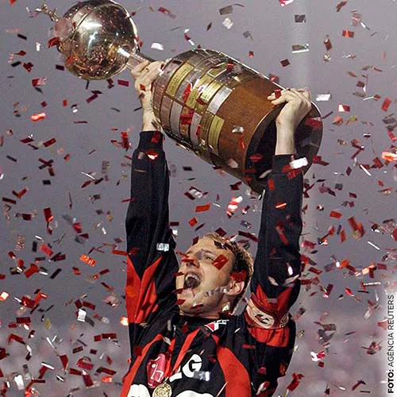

APAIXONADOS PELO
SÃO PAULO
Sua História
Títulos
Login
Títulos
Campeonato Paulista
21 Títulos
Campeonato Brasileiro
1977, 1986, 1991, 2006, 2007 e 2008

Copa Libertadores da América
1992, 1993 e 2005
Copa Intercontinental
1992 e 1993
Copa do Mundo de Clubes da Fifa
2005
Copa Sul-Americana
2012
Copa Conmebol
1994